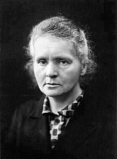

Maior Física e Química que já existiu
Marie Skłodowska-Curie, nascida Maria Salomea Skłodowska (Varsóvia, 7 de novembro de 1867 — Passy, 4 de julho de 1934), foi uma física e química polonesa naturalizada francesa, que conduziu pesquisas pioneiras sobre radioatividade. Foi a primeira mulher a ganhar o Prêmio Nobel, sendo também a primeira pessoa e a única mulher a ganhá-lo duas vezes, além de ser a única pessoa a ter ganhado o Prêmio Nobel em dois campos científicos diferentes. Teve papel fundamental no legado da família Curie, de cinco prêmios Nobel. Também foi a primeira mulher a se tornar professora na Universidade de Paris e, em 1995, se tornou a primeira mulher a ser sepultada por seus próprios méritos no Panteão de Paris.
Nascida em Varsóvia, no que era então o Reino da Polônia, parte do Império Russo, ela estudou na clandestina Universidade Volante de Varsóvia e iniciou seu treinamento científico prático na mesma cidade. Em 1891, aos 24 anos, seguiu sua irmã mais velha, Bronisława, para estudar em Paris, onde obteve seus diplomas superiores e conduziu seus trabalhos científicos subsequentes. Ela compartilhou o Prêmio Nobel de Física de 1903 com seu marido, Pierre Curie, e com o físico Henri Becquerel. Ela também ganhou o Prêmio Nobel de Química de 1911.
| Descoberta dos Elementos Radioativos | Marie Curie foi a primeira a isolar e identificar dois elementos radioativos, o polônio e o rádio. Essas descobertas foram fundamentais para o entendimento da radioatividade e abriram caminho para novas áreas de pesquisa em física e química. |
| Pesquisas sobre Radioatividade | Junto com seu marido Pierre Curie e o físico Henri Becquerel, Marie Curie investigou os fenômenos da radiação, estabelecendo os princípios básicos que moldaram o campo da física nuclear. Suas contribuições ajudaram a estabelecer a base para a física moderna. |
Marie Curie conquistou reconhecimento mundial por suas significativas contribuições científicas, que culminaram em prêmios Nobel e outras honrarias. Aqui estão suas principais conquistas e o motivo pelo qual recebeu prêmios tão prestigiosos:
| Prêmio Nobel de Física (1903) | Marie Curie recebeu o Prêmio Nobel de Física em 1903, juntamente com Pierre Curie e Henri Becquerel, por suas investigações sobre a radioatividade. Esse prêmio reconheceu seu trabalho pioneiro na descoberta de novos fenômenos físicos e na exploração de suas aplicações. |
| Prêmio Nobel de Química (1911) | Marie Curie foi agraciada com o Prêmio Nobel de Química em 1911, tornando-se a primeira pessoa e até hoje a única mulher a ganhar prêmios Nobel em duas disciplinas científicas diferentes. Este prêmio foi concedido em reconhecimento ao seu isolamento e estudo aprofundado do rádio e de seus compostos químicos. |
| Medalha Davy (1903) | Concedida pela Royal Society do Reino Unido em reconhecimento às suas contribuições para a ciência, especialmente suas descobertas sobre a radioatividade. |
| Medalha Matteucci (1904) | Conferida pela Academia Nacional de Ciências da Itália por suas contribuições científicas, particularmente suas pesquisas em física. |
| Medalha Elliott Cresson (1909) | Outorgada pela Academia Nacional de Ciências dos Estados Unidos por suas descobertas em radioatividade. |
| Curiosidade | Detalhes |
|---|---|
| Nome e Nacionalidade | Marie Curie nasceu como Maria Skłodowska na Polônia, então parte do Império Russo. Ela mais tarde se naturalizou francesa após se casar com Pierre Curie. |
| Pioneirismo Científico | Marie Curie foi a primeira mulher a receber um Prêmio Nobel e a única até hoje a ganhar em duas categorias diferentes (Física e Química). |
| Origem do Termo "Radioatividade" | Marie Curie cunhou o termo "radioatividade" para descrever as propriedades dos elementos que ela descobriu: o polônio e o rádio. |
| Contribuições Durante a Primeira Guerra Mundial | Durante a guerra, Marie Curie desenvolveu unidades móveis de raios-X para ajudar no tratamento de soldados feridos, demonstrando sua dedicação à aplicação prática de suas descobertas científicas. |
| Sepultamento no Panteão de Paris | Em 1995, Marie Curie se tornou a primeira mulher a ser sepultada no Panteão de Paris devido aos seus próprios méritos, em reconhecimento ao seu impacto duradouro na ciência e na sociedade. |
| Trabalho em Condições Precárias | Durante suas pesquisas iniciais sobre radioatividade, Marie Curie frequentemente trabalhava em condições precárias e enfrentava dificuldades financeiras, mostrando sua perseverança e determinação. |
| Descobertas Conduzidas em Laboratório Caseiro | Muitos de seus primeiros experimentos foram realizados em um laboratório improvisado em sua própria casa, usando equipamentos simples e acessíveis. |
| Curiosidade em Ciências desde Criança | Desde jovem, Marie Curie mostrou interesse em ciência e educação, apesar dos desafios enfrentados por mulheres na época para obter uma educação formal. |